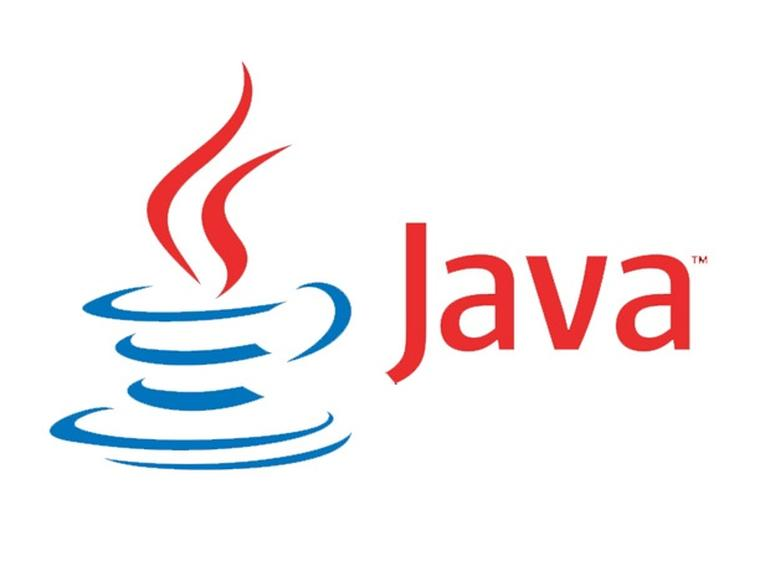

Computer Science at Mass Academy is taught by Mrs. Taricco. In Computer Science, we started learning how to use HTML5 and CSS3 for web development. We used both languages (along with Javascript, which was optional) to create our own websites from scratch.
Throughout most of the year, we will learn the Java programming language and work on projects using the language.
